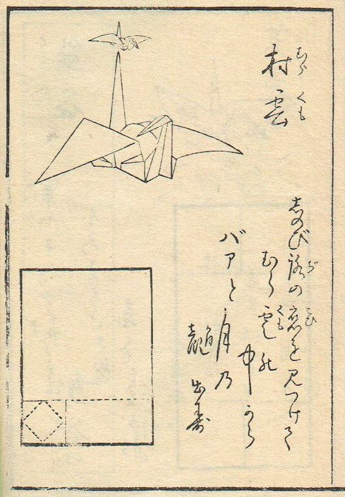

El arte del Origami
El origami, cuyo nombre proviene del japonés "ori" (plegar) y "kami" (papel), es una práctica ancestral que transforma una simple hoja de papel en figuras complejas mediante pliegues, sin usar tijeras ni pegamento.
Aunque el papel fue inventado en China, el origami se desarrolló profundamente en Japón, donde fue incorporado en rituales, celebraciones y más tarde en la educación y el arte.
A lo largo del siglo XX, artistas como Akira Yoshizawa modernizaron el origami, introduciendo técnicas como el plegado húmedo. Hoy es una herramienta pedagógica, terapéutica y artística utilizada en todo el mundo.
Ejemplos prácticos
{{ ejemplo.nombre }}
{{ ejemplo.descripcion }}